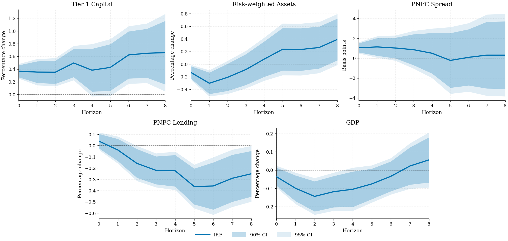
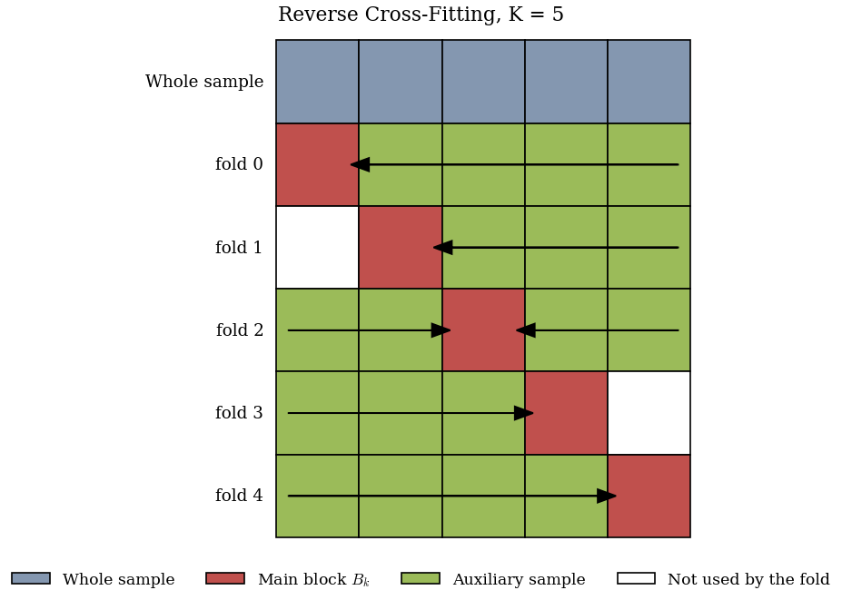
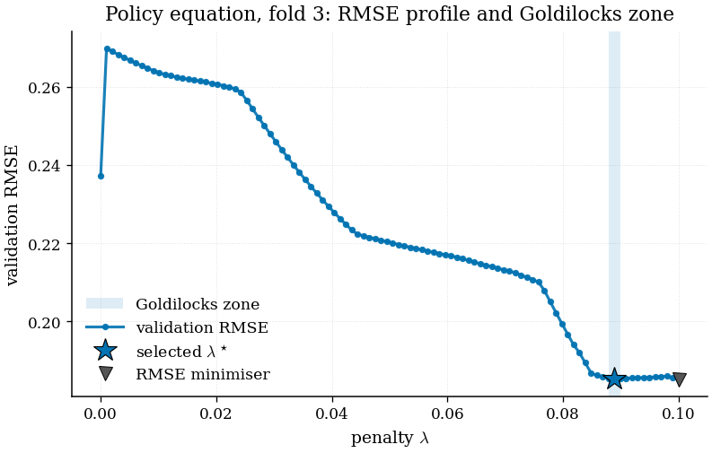
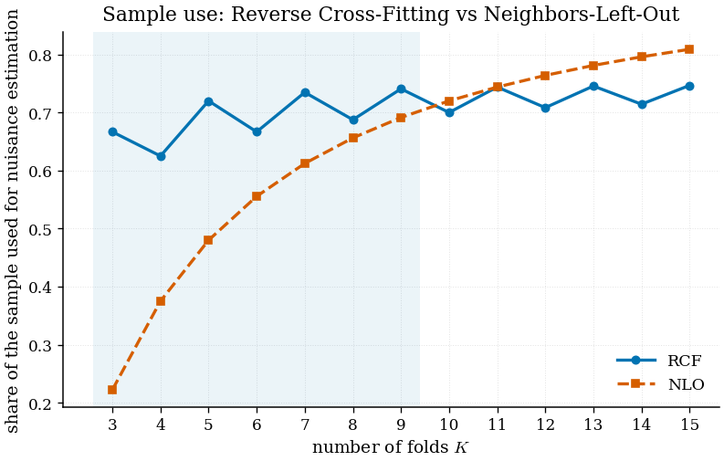
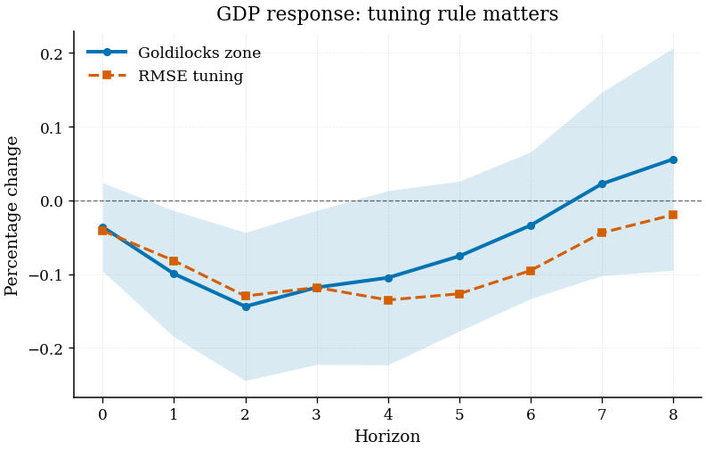
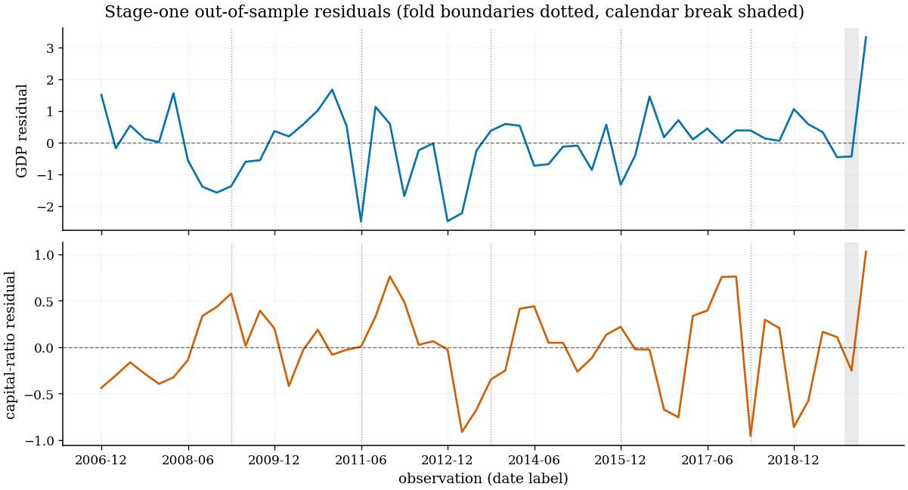

Causal inference with many controls and few observations — Reverse Cross-Fitting,
Goldilocks-zone tuning and DML local projections, in one pip install.
Double Machine Learning needs randomised cross-fitting. Randomising the folds of a time series destroys the sequential structure that makes it a time series. The existing repair deletes buffer blocks around every fold — expensive when you have sixty quarters of data.
Nuisance functions are trained on time-reversed auxiliary blocks — licensed by the reversibility of stationary Gaussian processes — and no buffer is deleted between the training and test samples.
At K = 6 that leaves 66.7% of the sample available for
nuisance estimation, against 55.6% under neighbour deletion.
The penalty that minimises prediction error is not the one that minimises bias in the causal score. Over-shrink the policy equation and you attenuate the signal you are trying to isolate.
The rule instead selects inside a locally stable region of the validation-error profile — cutting small-sample bias by roughly a fifth in the Monte Carlo below.
Horizon-specific impulse responses with automatic cumulation of differenced outcomes, and policy residuals cached across horizons.
Long-run variance of the stacked score sequence — Bartlett, QS, Parzen, EWC — seven bandwidth rules, and fixed-b critical values.
No buffer means conditional stability has to hold. The package ships a boundary-leakage test that tells you when it does not.
Enough to read the code and know what you are assuming.
A partially linear model with a scalar policy variable dt and a possibly high-dimensional control vector Xt:
θ0 is the target. Residualising both equations and regressing residual on residual removes g0 and makes the moment condition insensitive to first-order error in the nuisances — Neyman orthogonality. What remains is the problem of estimating those nuisances without letting the test observations contaminate the fit.
Cut the sample into K adjacent blocks of length ⌊T/K⌋. For fold k, the auxiliary sample is one side only — and nothing is deleted between it and the main block:
| fold 0 | MAIN | aux | aux | aux | aux | ← train right, time reversed |
| fold 1 | — | MAIN | aux | aux | aux | ← train right, time reversed |
| fold 2 | aux | aux | MAIN | aux | aux | ↔ both sides, averaged (odd K) |
| fold 3 | aux | aux | aux | MAIN | — | → train left, forward |
| fold 4 | aux | aux | aux | aux | MAIN | → train left, forward |
The fold estimate is the residual-on-residual OLS slope inside Bk, and the estimator is their average:
Because the auxiliary blocks sit flush against the main block, validity requires that — after conditioning on Xt — the training data carry no information about the main-block innovations:
This is the time-series analogue of no data leakage. It holds broadly for stationary linear processes when Xt absorbs the predictable component, and it fails under omitted persistent states, residual serial dependence after conditioning, or contemporaneously endogenous regimes. Under it, together with the usual op(T−1/4) nuisance rate:
Σ is the long-run variance of the stacked, time-ordered score
sequence — not an average of fold-wise variances — so dependence across main-block
boundaries is picked up. tsdml computes it that way.
Over an ordered penalty grid Λ, let 𝓡(λi) be the validation RMSE on a block carved out of the auxiliary sample. For each window 𝓦j of S consecutive grid points:
Ṽ and 𝓡̃ are the min–max normalised within-window variance and mean. Pick the most stable good window, then the best point inside it. Benchmark S = 3. The main block is never used for tuning or fitting, so every selected object stays measurable with respect to 𝓕aux,k and the proof survives.
Every plot below was produced by tsdml on the bundled data with the
package defaults — serif type, trimmed spines, a colourblind-safe palette and
editable PDF text.

plot_irf_panel(...)

plot_block_structure(K=5)

plot_goldilocks_profile(...)

plot_sample_use(...)

plot_irf_comparison(...)

tsdml warns you when the retained sample is
not contiguous, because lags spanning a break are not adjacent periods.
plot_residuals(...)
Everything in this section comes from running the package on the bundled dataset.
Reproduce it with
examples/02_empirical_replication.py.
Italy, 2006Q4–2022Q1 · RCF-DML local projections · Goldilocks-tuned Lasso · K = 6
| h | Tier 1 capital | Risk-weighted assets | PNFC spread (bp) | PNFC lending | GDP |
|---|---|---|---|---|---|
| 0 | 0.3668 | −0.1332 | 1.0455 | 0.0398 | −0.0360 |
| 1 | 0.3531 | −0.3036 | 1.1338 | −0.0396 | −0.0995 |
| 2 | 0.3519 | −0.2096 | 1.0232 | −0.1586 | −0.1438 |
| 3 | 0.4959 | −0.0862 | 0.8524 | −0.2199 | −0.1180 |
| 4 | 0.3830 | 0.0787 | 0.4969 | −0.2236 | −0.1049 |
| 5 | 0.4265 | 0.2338 | −0.2257 | −0.3632 | −0.0756 |
| 6 | 0.6223 | 0.2312 | 0.0845 | −0.3590 | −0.0339 |
| 7 | 0.6494 | 0.2624 | 0.3076 | −0.2904 | 0.0224 |
| 8 | 0.6586 | 0.3907 | 0.3067 | −0.2504 | 0.0559 |
Impact effect on GDP · same data, same folds, same grid
| RCF · Goldilocks | RCF · RMSE | NLO · RMSE | |
|---|---|---|---|
| θ | −0.5729 | −0.6531 | −0.5459 |
| Std. error | (0.4811) | (0.6279) | (0.4305) |
| t-statistic | 1.191 | 1.040 | 1.268 |
| p-value | 0.2391 | 0.3030 | 0.2104 |
| Folds K | 6 | 6 | 6 |
| Sample use | 0.667 | 0.667 | 0.556 |
estimation_table({...}). Predictive tuning inflates the standard error by
30% here; neighbour deletion gives up a ninth of the sample.
Share of observations available for nuisance estimation
| K | uRCF | uNLO | Winner |
|---|---|---|---|
| 3 | 0.6667 | 0.2222 | RCF |
| 5 | 0.7200 | 0.4800 | RCF |
| 6 | 0.6667 | 0.5556 | RCF |
| 9 | 0.7407 | 0.6914 | RCF |
| 10 | 0.7000 | 0.7200 | NLO |
| 11 | 0.7438 | 0.7438 | tie |
| 12 | 0.7083 | 0.7639 | NLO |
| 15 | 0.7467 | 0.8089 | NLO |
sample_use_table(...). RCF is not uniformly better — it is the
right tool in the moderate-K range where short samples force you.
GDP equation · Goldilocks zone · 100-point grid on [10⁻⁶, 0.1]
| Fold | n train | n validate | Outcome α | Policy α |
|---|---|---|---|---|
| 0 | 36 | 9 | 0.10000 | 0.10000 |
| 1 | 27 | 9 | 0.10000 | 0.10000 |
| 2 | 18 | 9 | 0.10000 | 0.10000 |
| 3 | 18 | 9 | 0.00101 | 0.08889 |
| 4 | 27 | 9 | 0.01919 | 0.07475 |
| 5 | 36 | 9 | 0.10000 | 0.00707 |
calibration_table(cal). Fold-specific by design. Several values sit at the
grid ceiling — on real work that is a signal to widen the grid, not a result.
Do adjacent blocks predict the main-block residuals?
| Test | F | p-value | n | df |
|---|---|---|---|---|
| pooled, policy residual | 0.6415 | 0.6411 | 20 | 4 |
diagnose(model)["leakage_policy"]. No evidence of leakage across the fold
boundaries here, so dropping the buffer is defensible on this data. On a design built
to violate the assumption the same test fires on 29 draws out of 40.
examples/03.
Every analysis with this package has the same shape.
Time-ordered X, y, d. Rows must be
consecutive periods — the fold structure is positional, and nothing can check it
for you.
Six unless you have a reason. Bigger K means better nuisances and noisier fold estimates.
Calibrator carves a validation block out of the auxiliary sample —
never the main block — and applies the Goldilocks rule.
ReverseCrossFitting refits the selected learners on each auxiliary
sample, residualises, and averages the fold slopes.
diagnose() checks conditional stability. If it fires: more lags
first, buffered folds second.
import numpy as np
from sklearn.linear_model import Lasso
from tsdml import Calibrator, ReverseCrossFitting, diagnose
# 1. time-ordered arrays
X, y, d = my_controls, my_outcome, my_policy
grid = {"alpha": np.linspace(1e-6, 0.4, 100),
"max_iter": [100_000]}
# 2-3. tune the two nuisances, fold by fold
cal = Calibrator(metric="goldilocks_zone", n_blocks=6)
cal.calibrate(
X, y, d,
outcome_learner_class=Lasso, outcome_param_grid=grid,
treatment_learner_class=Lasso, treatment_param_grid=grid,
)
# 4. cross-fit and estimate
model = ReverseCrossFitting(
n_blocks=6,
block_specific_learners=cal.block_specific_learners_,
).fit(X, y, d)
model.summary()
# 5. test the assumption you are relying on
checks = diagnose(model)
print(checks["leakage_policy"])========================================================
Reverse Cross-Fitting DML -- partially linear model
========================================================
observations : 200
folds (K) : 6 block size 33
stage-2 method : block
HAC : bartlett (rule 'small')
--------------------------------------------------------
coef std err t P>|t|
theta 1.367399 0.083104 16.450 0.0000 ***
95% CI: [1.204518, 1.530280]
fold estimates: [1.08, 1.04, 1.64, 1.46, 1.35, 1.63]
========================================================X and the estimator still returns a
number, and the number is meaningless. Sort once, at the top of your script.
The step-by-step guide is the place to start: thirteen steps, every argument explained, with a troubleshooting section at the end.
Checked end to end on the paper's own data and specification
| Checked | Result |
|---|---|
| X, y, policy, leads from the data pipeline | identical |
| Estimation index — dates and length | identical |
| Stage-one residuals, both equations | identical |
| θ and standard error, fixed-penalty RCF | identical to 1e−15 |
| Goldilocks penalties, 6 folds × 2 equations | identical |
| Impulse responses, 5 outcomes × 9 horizons × 2 bands | identical |
| Scaled Figure 2 responses | identical |